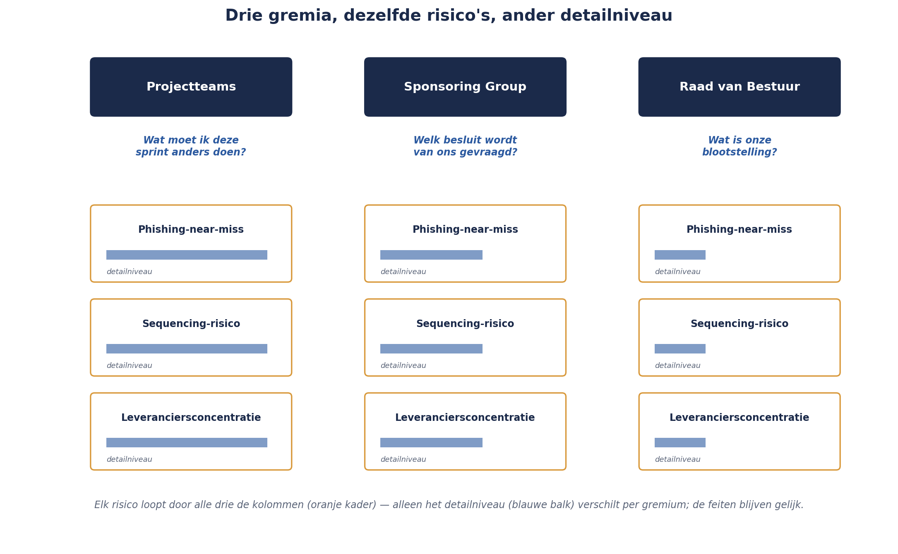

Deel 19 — Rapportage en besluitvorming
Niveau 2 — Professional · Slidedeck (30 slides, twee dagdelen)
Slide 1 — Titel
Risicomanagement Deel 19 — Rapportage en besluitvorming
Niveau 2: Professional — Twee dagdelen
Slide 2 — Sanne’s week
Dinsdag: vijf projectteams. Woensdag: Sponsoring Group. Vrijdag: Raad van Bestuur.
Slide 3 — DAGDEEL 1: Concepten en voorbereiding
Slide 4 — Dezelfde risico’s, drie keer
De verleiding: drie keer dezelfde slides.
De fout: dat is geen vertalen, dat is herhalen.
Slide 5 — Terug naar Kernzin 1
Een register dat nooit een besluit veranderde, werkte niet.
Datzelfde geldt voor een rapport.
Slide 6 — Kernzin 13
Een rapportage die niet eindigt met een vraag aan de ontvanger, is geen rapportage — het is een mededeling die toevallig risico’s bevat.
Slide 7 — De dashboardvalkuil, drie vormen
Alles even zwaar · Kleuren zonder verhaal · Precisie die niet bestaat
Slide 8 — Vorm 1
Twintig risico’s, allemaal even uitgebreid.
De ontvanger moet zelf uitzoeken waar de aandacht naartoe moet.
Slide 9 — Vorm 2
Rood. Geel. Rood.
Geen woord over wat er veranderde, of waarom.
Slide 10 — Vorm 3
€287.432,18.
Precisie die de onderliggende aannames niet waarmaken.
Slide 11 — Opdracht 19.1 — 20 minuten
Drie fragmenten. Welke valkuil?
Slide 12 — De gedeelde familieregel
Het register bepaalt de nadruk, nooit de feiten.
Slide 13 — Nadruk mag verschillen
De feiten — score, status, trigger — nooit.
Slide 14 — Drie gremia, drie perspectieven
Projectteams → project/programma Sponsoring Group → programma/portfolio Raad van Bestuur → strategisch/extern
Slide 15 — Drie hoofdvragen
Wat moet ik anders doen? Welk besluit wordt gevraagd? Wat is onze blootstelling?
Slide 16 — Figuur 19-1

Slide 17 — Het vaste narratief — vier vragen
Wat veranderde? · Wat escaleerde, en waarom?
Slide 18 — Vier vragen, vervolg
Welke acceptatiebesluiten? · Welk besluit wordt nu gevraagd?
Slide 19 — Opdracht 19.2 en 19.3
Vertaal naar drie gremia. Eindig met een vraag.
Slide 20 — Einde dagdeel 1
Voorbereiding klaar voor de simulatie.
Slide 21 — DAGDEEL 2: De live simulatie
Slide 22 — Opzet
3 groepjes, 3 risico’s, elk 3 versies. 3 panels: projectteam, Sponsoring Group, Raad van Bestuur.
Slide 23 — De risico’s
Phishing-near-miss (deel 18) Sequencing-risico met Monte Carlo (deel 14-15) Leveranciersconcentratie (deel 17)
Slide 24 — Ronde 1: Projectteam-panel
5 minuten presenteren, 2 minuten bevragen. Per groepje.
Slide 25 — Ronde 2: Sponsoring Group-panel
“Wat vragen jullie nu van ons?”
Slide 26 — Ronde 3: Raad van Bestuur-panel
Risicobereidheid. Toezichtimplicaties. Kort geduld voor detail.
Slide 27 — Observatieopdracht
Noteer: één moment waarop de nadruk verschilde. Eén moment (indien aanwezig) waarop een feit leek te veranderen.
Slide 28 — Plenaire toets
Zijn de feiten identiek gebleven?
Of is er ergens onbewust verzacht?
Slide 29 — De belangrijkste valkuil
Niet opzettelijke misleiding.
Een sluipende neiging om naar boven toe geruststellender te formuleren.
Slide 30 — Voor deel 20
Deel 20 (los aanbiedbaar): risicocultuur en gedrag — waarom techniek alleen niet volstaat.